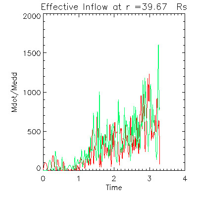

After finishing my undergraduate degree in Physics with a minor in Math at the New Mexico Institute of Mining and Technology, I decided to pursue a doctoral degree in Astrophysics at the University of Arizona. I spent my time in graduate school attending classes, teaching undergraduates, and researching theoretical astrophysics. I have a deep interest in theoretical physics, but I found the most rewarding part of my time at graduate school was spent working with software. In fact, I came to realize that the accomplishments of which I was most proud had come from interesting and challenging problems I encountered while working with code. Despite having passed my PhD qualifiers, I decided to leave the PhD program with a Masters in Physics and to pursue a career in software.
Given my passion for games and gaming, I decided to pursue work in game programming and joined Muzzy Lane to work on their upcoming release Making History: The Great War (TGW). I spent close to a year working on implementing, improving, and optimizing the game's systems and AI. TGW was a passion project for Muzzy Lane. Their main focus is building educational games for higher education, corporate training, and non-traditional students. Given Muzzy Lane's small team, this gave me an opportunity to take ownership over many of the systems I worked on, which led to me being credited as Lead Engineer for the game. Soon after the release of TGW in 2015, Muzzy Lane shifted its focus to providing a robust web-based game creation toolkit for businesses and instructional designers. I now specialize in building customized game simulation templates for a wide variety of subjects including hospital administration and WWI history. This work is incredibly rewarding in that it presents a particular challenge of providing robust and dynamic authoring software while also implementing detailed simulations.
As my girlfriend finishes law school this spring, we have been presented with a new opportunity to pursue careers in the San Francisco Bay Area. After much consideration, we have decided to leave New England and to pursue this new opportunity. I enjoy gaming, music, and science. I am particularly interested in simulation, systems, and abstract programming and problem solving and am hoping to find a career that meets these interests.
Making History: The Great War (TGW) is a turn based grand strategy game set during the events of World War I. The game features different scenarios that start at different dates around the beginning and (with a recently released DLC) end of the war. Any nation in the game is playable and the game features full multiplayer and mod support.
I joined Muzzy Lane after work on TGW had already begun and after the game's initial early access release on Steam. My role was to finish feature/system implementation and to improve and expand upon both the economic and military AI. Soon after joining, I effectively took ownership of these systems and pushed for a feature complete release in January 2015. For my work, I was credited as lead engineer. Developmental work on TGW continued until mid-summer 2015, where I focused primarily on new features for the recently released DLC The Red Army.
Smart Sim is my most recent project with Muzzy Lane. Designed to be used with Muzzy Lane's Author service, Smart Sim is a fully authorable game template intended to be used by instructional designers as an education and assessment tool. In addition to building the game client and backend, I also built a fully featured web-based editor that gives authors full control over game variables and behavior. The author creates game variables and can choose to pin these variables to the top hud as either primary (gold) or secondary (black) variables. The author can then create game actions and game triggers to control player interaction with the game variables and to script game behavior.
The game itself includes several optional systems such as turn based play, popup notices, and a simple conversation system. These tools allow the author to create very dynamic behavior that can be as simple or as complicated as desired. Additionally, this game is designed for use through several different course management platforms including Canvas and Blackboard. The game template itself is still in the very early stages of development, but it already shows signs of being one of the more versatile game templates offered through Author.
Challenges In Community Health (CCH) is a custom game template that I built for a hospital administration course. Designed to be used with Muzzy Lane's Author service, CCH is built off of many of the same systems as the generic simulation tool mentioned above (Smart Sim). Additionally, CCH has been outfitted with a detailed epidemiological to model an uncontrolled spread of the Flu virus through a small town. Gameplay centers around maintaining staff health while also trying to raise awareness in the community. These factors affect the lethality and spreading rate of the virus. The model itself is based off of a popular model known as the SIR model (Susceptible -> Infected -> Recovered). CCH modifies this model to include lethality and the inter-mixing of different population groups that experience different viral spreading rates. Included with the game is an editor that I built that allows instructional designers to control simulation and game parameters and to create custom content.
A graph of the simulation results for a sample game is shown here. The graph shows the fraction of the total population that are susceptible, infected, recovered, vaccinated, and deceased.
As a graduate student at the University of Arizona, I used Zeus-MP to simulate accretion disks around black holes. Zeus-MP is a popular 3D massively parallel radiation magneto-hydrodynamics code. It was originally developed by Stone and Norman and later modified by Hayes et. al to utilize MPI for parallel computing. By using generic metrics, the equations solved therein are independent of any specific geometry, making the code versatile enough to easily handle different geometries. Additionally, Zeus-MP's inclusion of both magnetic fields and radiation makes the code versatile enough to handle many different Astrophysical fluids problems.
Using the hydro and radiation modules of Zeus-MP, we set out to determine what effects radiation pressure have on the rates at which black holes devour gas and grow. This project involved an enormous amount of effort to develop a self-consistent model with which to feed gas into the system as well as an appropriate way to build the accretion disk while maintaining stability within the code.
Using the Steele cluster at Purdue university, I ran several different simulations with varying gas inflow rates and free-free emission strengths. The results of one such run are stored here. The following figure and video show the gas inflow rate at ~40 blackhole radii normalized by a theoretical maximum and a log-density plot (with velocity arrow overlays whose lengths are normalized to the speed of light) of the simulation respectively. The video shows a sidelong view of the accretion disk with the black hole at the center and the disk along the horizontal axis. The black hole itself features an incredibly turbuluent disk (brought on by radiation pressure) and strong outflow along the rotational (vertical) axis.

All of my personal game projects center around my SDL/OpenGL rendering engine I call Oracle. Oracle is a scene based engine written in C++ that uses SDL and OpenGL for both 3D and 2D rendering. It includes utilities for custom shaders, texture and model transformations, basic collisions, particles, and a simple UI system consisting of panels, buttons, and text entry fields. The video featured here is a tech test of a plane flying around a 3D environment. The user controls the pitch, yaw, and roll of the plane to change the direction of travel.
My biggest project to date using Oracle is a space based strategy game called Reaver. Reaver consists of two main scenes. The first is a top level strategy layer consisting of a graph of connected planets where the player can purchase ships, travel to different planets, and attack enemy planets. The second is a turn based tactical layer where the battles for planets occurs. Turns are taken per ship instead of per player where the order is determined by ship initiative. Each ship has two modes of firing and a set speed that determines how far they can move in a turn.
The videos featured in this section include gameplay demo of Reaver and a gameplay demo of a pseudo-shmup style game. In the shmup demo, the player has several weapon types including a standard projectile, triple fire projectile, homing missiles, and a flak launcher. In order to handle collision detection for this game while maintaining a roughly 60 fps frame-rate, I built a generic 2D search tree based off of axis aligned bounding boxes. The tree itself is rebalanced in a separate thread from the game's main loop while Oracle renders the scene. This search tree is featured in the 'Code Sample' section of this portfolio.
In addition to my interest in gaming, I also have an interest in simulation. The videos shown here show two different simulations using an N-Particle simulator that I wrote. The first is a simulation of two colliding galaxies. This simulation shows some nice features of a close-by collision including tidal tails. The stars shooting rapidly from the galaxy centers is a the result of a numerical effect. This is solved using a softening parameter in the gravitational force calculation, which has been intentionally left out here. The second video shows a common Astrophysical problem known as the three-body problem. This simulation illustrates the potentially chaotic behavior of three interacting stars.
The base search tree is designed to handle any 2D search where the search space for a node can be subdivided into 4 quadrants. A value entered into the tree can belong to any number of node quadrants. Implementation for specific search and value types is accomplished by overriding a set of pure virtual functions that define the behavior of the tree. The specific implementation of the tree using 2D axis aligned bounding boxes and 2D sprites is provided above. In this case, each node is represented by a bounding box. When sprites are pushed into the tree, all nodes that overlap with that sprite will either directly hold onto that sprite or subdivide its space into quadrants, creating four new leafs to hold onto its sprites. A specific use of this tree is illustrated in the video shown. In this case, all arrows are entered into the search tree. The green arrow is controlled by the player's mouse and the red arrows are the sprites returned by the search tree using the mouse arrow as a test value. These red sprites can then be tested for a potentially more expensive collision calculation. The implementation of this scene is also provided.